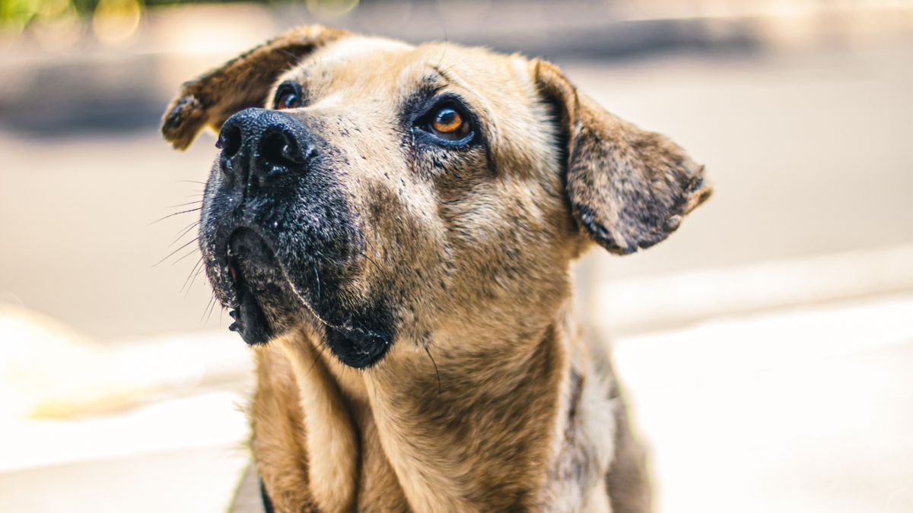

점검 구역
지면~80cm 구간이 핵심입니다. 전선·멀티탭(1.5m 이내), 창문·발코니(방충망 찢김), 주방 쓰레기통(뚜껑 없으면 5천 원짜리 뚜껑형으로 교체), 작은 장식품(지름 3cm 이하), 문틈(2cm 이상 틈)을 봅니다.
이렇게 하면 · 이렇게 하면
서서 5분 둘러보기는 전선·작은 물건을 놓치기 쉽습니다. 무릎 꿇고 10분은 허리가 불편해도 지면~80cm 사고의 70%를 잡는 경우가 많습니다.
입양 전날만 점검은 3개월 뒤 가구 이동을 놓칩니다. 이동 때마다 5분은 번거롭지만 쓰레기통·식물 위치 변경을 따라잡습니다.
방충망만 믿기는 고양이 체중에겐 부족할 수 있습니다. 창 잠금·스토퍼를 함께 보는 편이 안전합니다.
점검 방법
무릎 꿇고 반려동물 시선(높이 15~40cm)으로 거실 한 바퀴를 10분 돕니다. 침대 아래·소파 뒤·신발장 안을 포함합니다. 스마트폰 손전등으로 좁은 틈을 비춥니다.
점검표에 O/X를 적고 냉장고에 붙이면, 가구 이동 후 5분 재점검이 쉬워집니다.
우리 집에 맞게
안전 점검은 입양 전날 30분, 가구 이동 때마다 5분, 계절 전환 때 10분이 현실적인 주기입니다. 무릎 꿇고 지면~80cm 구간을 보는 습관이 사고 예방의 절반입니다.
전선·멀티탭·쓰레기통 뚜껑·방충망 찢김·식물 위치를 우선 확인하세요. 사고 후 '그걸 몰랐다'는 말이 가장 많은 항목입니다.
세제·살충제·의약품은 하위 서랍이 아닌 상부 1m 이상 보관합니다. 고양이는 높은 선반도 올라갈 수 있습니다.
지름 3cm 이하 공·장식품·전선은 삼키기·씹기 위험이 큽니다. 케이블 홀더로 벽면 30cm 높이에 고정하면 전선 씹음을 줄일 수 있습니다.
아이와 반려동물이 함께 있으면, 아이 장난감 작은 부품도 함께 점검하세요.
점검 목록을 사진 4장(전선·창문·주방·욕실)으로 남기면, 3개월 뒤 비교가 쉽습니다.
주방은 조리 중 냄비 손잡이 방향을 안쪽으로 두세요. 뜨거운 기름·양파 껍질은 바닥에 떨어지면 1분 안에 치우는 습관이 필요합니다.
문틈·발코니 틈새는 손가락 한 개가 들어가는지로 테스트합니다. 통과하면 추가 차단을 검토하세요.
안전 점검 후 가족에게 '오늘 바뀐 것' 한 가지만 공유하면, 누군가 다시 위험 물건을 내려놓는 실수를 줄일 수 있습니다.
이번 주 안전 점검 체크리스트입니다. 무릎 꿇고 지면~80cm만 봐도 충분합니다.
- 전선·멀티탭·쓰레기통 뚜껑을 확인했습니다.
- 방충망 찢김·창문 잠금 상태를 봤습니다.
- 세제·의약품·살충제를 하위 서랍에서 치웠습니다.
- 지름 3cm 이하 공·장식품을 수거했습니다.
- 주방 조리 중 냄비 손잡이를 안쪽으로 두었습니다.
- 아이 장난감 작은 부품을 함께 점검했습니다.
- 전선을 케이블 홀더로 30cm 이상 올렸습니다.
- 점검 사진 4장(전선·창문·주방·욕실)을 남겼습니다.
완벽한 방벽보다 '사고 나기 전 자주 보는 구간'을 줄이는 편이 현실적입니다.
안전 점검은 입양 전 30분, 이후 계절·가구 이동 때 5~10분이면 됩니다. 무릎 꿇고 지면~80cm를 보는 습관이 전선·작은 물건 사고를 크게 줄입니다. 세제·약은 높은 곳에, 방충망 찢김은 즉시 수리하세요. 점검 사진 4장을 남기면 3개월 뒤 비교가 쉽고, 아이 장난감 작은 부품도 함께 보면 좋습니다.
점검 사진 4장을 찍어 두면, 3개월 뒤 '그때는 괜찮았는데' 하는 항목을 바로 찾을 수 있습니다.
아파트와 단독주택은 위험 항목 순위가 다릅니다. 발코니·쓰레기통·전선 중 우리 집에서 사고가 잦았던 것 1가지만 이번 주에 먼저 손보세요.
아파트와 단독주택은 위험 항목 순위가 다릅니다. 우리 집에서 사고가 잦았던 것 1가지만 이번 주에 먼저 손보세요.
점검 사진 4장(전선·창문·주방·욕실)을 남기면 3개월 뒤 비교가 쉽습니다. 아이 장난감 작은 부품도 함께 보면 좋습니다.
주방 조리 중 냄비 손잡이를 안쪽으로 두고, 양파 껍질·뼈는 1분 안에 치우는 습관이 사고를 줄입니다.
완벽한 방벽보다 사고 나기 전 자주 보는 구간을 줄이는 편이 현실적입니다. 이번 주는 전선 위치만 바꿔도 절반이 끝납니다.
이 글의 체크리스트는 한꺼번에 적용하기보다 2개만 골라 2주 반복하는 편이 낫습니다.
가족과 공유할 때 '누가·언제' 한 줄만 합의해도 실행률이 달라지는 경우가 많습니다.
안 된 날은 다음 주 조정 재료로만 남기세요. 완벽한 하루가 없어도 괜찮습니다.
식물·약품·세제
스킨답서스·몬스테라·백합 등 위험 식물이 있습니다. 집 식물을 이름·위치 목록으로 적고, 반려동물 접근 불가 높이(80cm 이상)로 옮깁니다. 세제·살충제는 하위 서랍이 아닌 상부 1m 이상 보관합니다.
재점검 주기
입양 전 1회(30분), 가구 이동 때마다 5분, 계절 전환(3·6·9·12월)에 10분. 방충망은 여름 전에 특히 확인합니다.

비교하며
사고 후 가장 많이 나오는 말이 '그걸 몰랐다'입니다. 전선과 쓰레기통이 대표적입니다.
비교해 보면 무릎 꿇은 10분이 서서 30분보다 효율적인 경우가 많습니다. 오늘은 전선 위치만 바꿔 보세요.
초보자가 자주 실수하는 포인트
- 서서 사람 눈높이만 점검
- 찢어진 방충망 방치
- 쓰레기통 뚜껑 없이 사용
- 식물 이름만 검색하고 목록화 안 함
- 세제를 하위 서랍에 보관
체크리스트
- 무릎 꿇고 10분 동선 점검
- 케이블 홀더로 전선 고정
- 방충망·발코니 잠금 확인
- 쓰레기통 뚜껑형 교체
- 식물·세제 목록·위치 정리
자주 묻는 질문
- 입양 전날만 점검해도 되나요?
- 입양 전 1회는 필수이고, 가구 이동·계절 전환 때 5~10분 재점검을 반복하는 편이 안전합니다.
- 케이블 홀더 없이 전선만 올려도 될까요?
- 일시적으로는 가능하지만, 반려동물이 끌어당기기 쉬운 위치면 홀더로 고정하는 편이 낫습니다.
- 위험 식물 목록은 어디서 확인하나요?
- 집에 있는 식물 이름을 적고 검색해 보세요. 이름·위치 목록을 만들어 두면 재점검이 쉬워집니다.
- 고양이만 키울 때도 무릎 꿇고 점검해야 하나요?
- 네. 고양이는 높은 선반·커튼 박스·화분 위를 오르므로, 지면뿐 아니라 뛰어오를 높이까지 함께 보는 편이 좋습니다.
이 글은 초보자 기준으로 이해하기 쉽게 정리되었으며, 내용은 운영 과정에서 순차적으로 보완될 수 있습니다. 수의사 등 전문가의 진단·처치를 대체하지 않습니다.